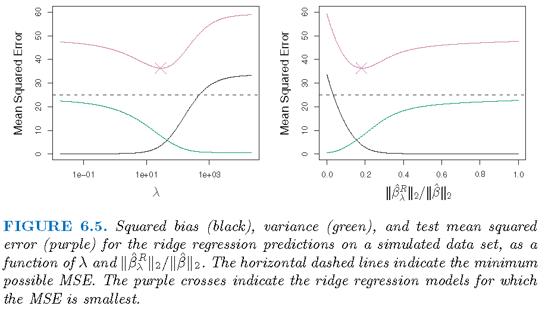
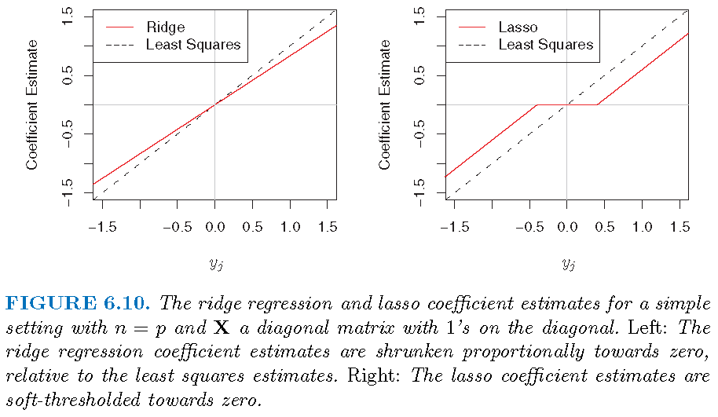
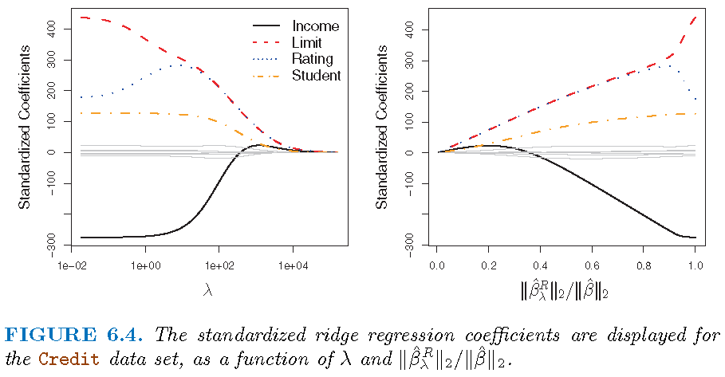
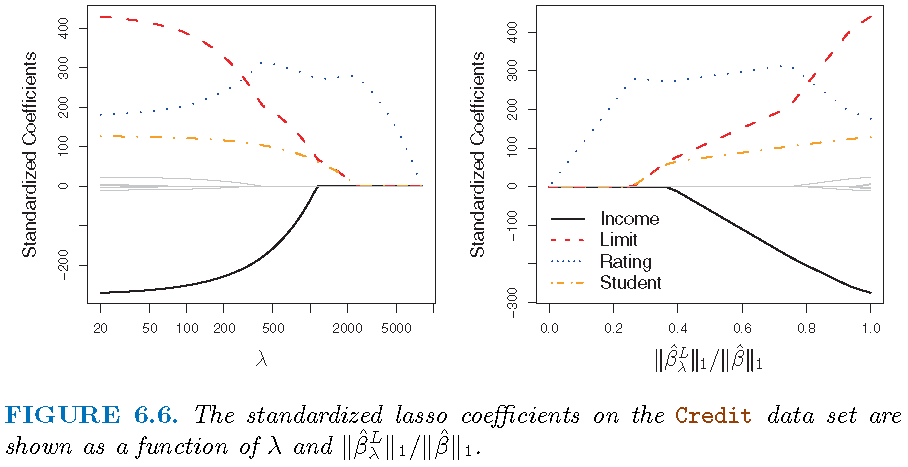
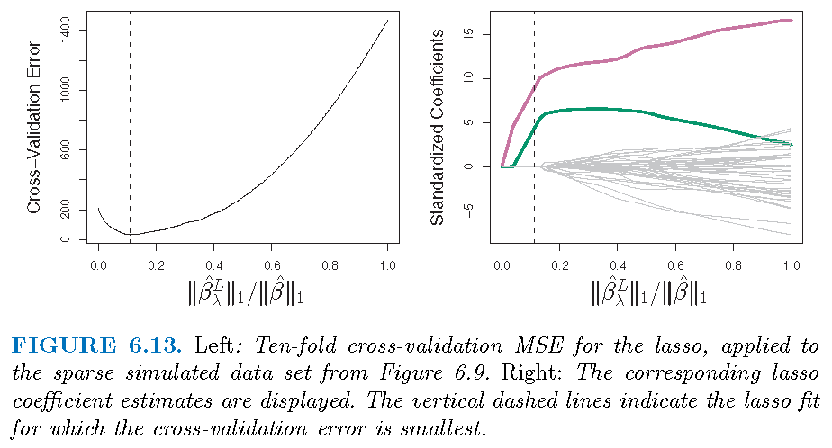
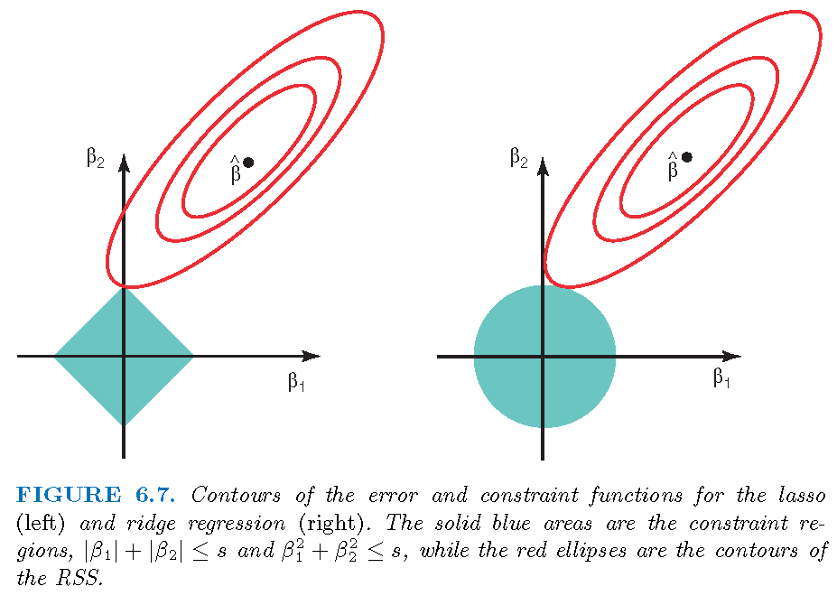
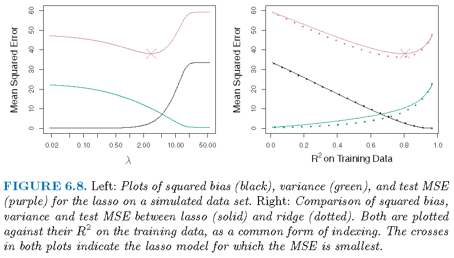
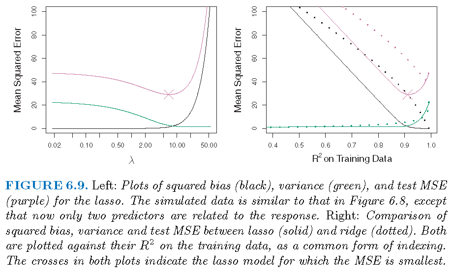

Stat 435 Lecture Notes 4b
Xiongzhi Chen
Washington State University

Ridge regression: basics
Overview
Ridge regression
- applies regardless of magnitues of sample size \(n\) and number of predictors \(p\)
- shrinks estimated coefficients compared to least squares estimate (LSE)
- is able to produce LSE
- presents a way to estimate coefficients when \(n < p+1\)
Ridge regression often produces a biased estimate with smaller variance than LSE, and it is a bias-variance trade-off technique.
Settings
Model: \(Y=\beta_0+\beta_1 X_1 + \beta_2 X_2 + \ldots + \beta_p X_p + \varepsilon\)
Observations: \((y_i,x_{i1},x_{i2},\ldots,x_{ip}),i=1,\ldots,n\), where \(y_i\) is the \(i\)th observation for \(Y\) and \(x_{ij}\) that for \(X_j\)
Estimate \(\hat{\boldsymbol{\beta}}=(\hat{\beta}_1,\ldots,\hat{\beta}_p)\) of \({\boldsymbol{\beta}}=({\beta}_1,\ldots,{\beta}_p)\), and \(\hat{\beta}_0\) of \({\beta}_0\)
Fitted model: \(\hat{y}_i=\hat{\beta}_0+\hat{\beta}_1 x_{i1} + \hat{\beta}_2 x_{i2} + \ldots + \hat{\beta}_p x_{ip}\)
Residuals: \(e_i=y_i - \hat{y}_i\)
Optimization
- The ridge estimate \(\hat{\boldsymbol{\beta}}^R_{\lambda}=(\hat{\beta}_1,\ldots,\hat{\beta}_p)\) is the \({\boldsymbol{\beta}}=({\beta}_1,\ldots,{\beta}_p)\) that minimizes \[ L_2(\beta_0,\boldsymbol{\beta},\lambda)= \sum_{i=1}^n (y_i - \hat{y}_i)^2 + \lambda \sum_{i=1}^p \beta_i^2 \]
- \(\sqrt{\sum_{i=1}^p \beta_i^2}\) is written as \(\Vert\boldsymbol{\beta}\Vert_2\), i.e., the \(l_2\)-norm of \(\boldsymbol{\beta}\)
- \(\sum_{i=1}^n (y_i - \hat{y}_i)^2\) is just the RSS
- \(\lambda \sum_{i=1}^p \beta_i^2\) is called a regularizer or penalty
- \(L_2(\beta_0,\boldsymbol{\beta},\lambda)\) is referred to as an \(l_2\)-regularized RSS
- no penalty on \(\beta_0\)
Intercept term
- Recall \(\mathbf{x}_i=(x_{i1},x_{i2},\ldots,x_{ip}),i=1,\ldots,n\), where \(x_{ij}\) is the \(i\)th observation for \(X_j\)
- Let \(\mathbf{X}\) be the \(n \times p\) matrix whose \(i\)th row is \(\mathbf{x}_i\)
- \(\mathbf{X}\) is called a design matrix (when factors as predictors are properly coded)
If the variables \(X_i,i=1,\ldots,p\) are centered, i.e., the columns of \(\mathbf{X}\), to have mean zero before ridge regression is performed, then the estimated intercept will be \[\hat{\beta}_0=\bar{y}=\sum_{i=1}^n y_i/n\]
Solution path
Recall the objective function \[ L_2(\beta_0,\boldsymbol{\beta},\lambda)= \sum_{i=1}^n (y_i - \hat{y}_i)^2 + \lambda \sum_{i=1}^p \beta_i^2 \] and its solution \(\hat{\boldsymbol{\beta}}^R_{\lambda}=(\hat{\beta}_1,\ldots,\hat{\beta}_p)\)
- no penalty on estimated \(\beta_0\)
- \(\lambda=0\) gives the LSE, and \(\lambda=\infty\) forces \(\hat{\boldsymbol{\beta}}^R_{\lambda}=0\)
- some \(0 < \lambda < \infty\) strikes a balance between LSE and \(\hat{\boldsymbol{\beta}}^R_{\lambda}=0\)
Note: The ridge solution has explicit reprentation.
Bias-variance trade-off
Ridge regression works best in situations where the least squares estimates have high variance:
- \(\lambda=0\): ridge estimate is the LSE and is unbiased
- \(\lambda >0\): bias increases and variance decreases usually
- \(\lambda=\infty\): estimated coefficients are all zero
Bias-variance trade-off
\(p=45\) predictors and \(n=50\) observations; all \(\beta_j \ne 0\)

Select tuning parameter
The optimal value \(\lambda^{\ast}\) of the tuning parameter \(\lambda\) is ofen determined by \(k\)-fold cross-validation:
- Pick a sequence of \(s\) values for \(\lambda\) as \(\lambda_1, \lambda_2, \ldots, \lambda_s\)
- For each \(\lambda_l\), apply \(k\)-fold cross-validation to estimate the test error of the corresponding model
- Set \(\lambda^{\ast}\) as the value among the \(s\) values of \(\lambda\) for which the estimated test error is the smallest
Ridge regression: special case
Special model
- Assume the design matrix \(\mathbf{X}=\mathbf{I}_p\), i.e., the identity matrix
- Consider a linear regression model without an intercept, i.e., forcing \(\beta_0=0\)
If \(n=p\) and \(\mathbf{X}=\mathbf{I}_p\), then we have a very special model: \[y_j = \beta_j+\varepsilon_j,j=1,\ldots,p\]
Note: \(\mathbf{X}=\mathbf{I}_p\) is referred to as an orthogonal design
LSE and ridge estimate
For the special model \[y_j = \beta_j+\varepsilon_j,j=1,\ldots,p,\]
- the LSE (i.e., least squares estimate) is \[\hat{\beta}_j=y_j\]
- the \(l_2\)-regularized RSS becomes \[ L_2(\beta_{0},\boldsymbol{\beta},\lambda)= \sum_{j=1}^p (y_i - \beta_j)^2 + \lambda \sum_{i=1}^p \beta_i^2 \] and the ridge estimate is \[\hat{\beta}_{j,\lambda}^R=y_j/(1+\lambda)\]
Three estimators

Ridge regression: application
Scale equivariance
- Recall the design matrix \(\mathbf{X}\), whose \((i,j)\)th entry \(x_{ij}\) is the \(i\)th observation of predictor \(X_j\)
- Ridge regression estimates depend on the scale of predictors
- Before applying ridge regression, it is best to standardize predictors as follows \[ \tilde{x}_{ij}= \frac{x_{ij}}{\sqrt{\frac{1}{n}\sum_{i=1}^n (x_{ij}-\bar{x}_j)^2}} \] where \(\bar{x}_j=n^{-1}\sum_{i=1}^n x_{ij}\)
- The resulting ridge gression estimates are called standardized estimates
Illustration
Modelling the Credit data set
- Response
Balance - Predictors
Income,Limit,RatingandStudent
Illustration

Inference
- The method of bias correction can be used to conduct inference on ridge estimates
- Canonical assumptions involve Gaussian random errors
- Asymptotic theory on testing coefficients is based on Gaussian limiting distributions
- P-values from testing can be obtained
Note: “High-Dimensional Inference: Confidence Intervals, p-Values and R-Software hdi” by Ruben Dezeure, Peter Buhlmann, Lukas Meier and Nicolai Meinshausen
Inference
- Tesing \(H_{j0}:\beta_j =0\) versus \(H_{j1}:\beta_j \ne 0\)
- P-values for testing if the coefficient of each of
Income,Limit,RatingandStudent:
Income Limit Rating StudentYes
4.878273e-229 4.712512e-15 2.502320e-18 3.116377e-128 LASSO: basics
Settings
Model: \(Y=\beta_0+\beta_1 X_1 + \beta_2 X_2 + \ldots + \beta_p X_p + \varepsilon\)
Observations: \((y_i,x_{i1},x_{i2},\ldots,x_{ip}),i=1,\ldots,n\), where \(y_i\) is the \(i\)th observation for \(Y\) and \(x_{ij}\) that for \(X_j\)
Estimate \(\hat{\boldsymbol{\beta}}=(\hat{\beta}_1,\ldots,\hat{\beta}_p)\) of \({\boldsymbol{\beta}}=({\beta}_1,\ldots,{\beta}_p)\), and \(\hat{\beta}_0\) of \({\beta}_0\)
Fitted model: \(\hat{y}_i=\hat{\beta}_0+\hat{\beta}_1 x_{i1} + \hat{\beta}_2 x_{i2} + \ldots + \hat{\beta}_p x_{ip}\)
Residuals: \(e_i=y_i - \hat{y}_i\)
Optimization
- The LASSO estimate \(\hat{\boldsymbol{\beta}}^L_{\lambda}=(\hat{\beta}_1,\ldots,\hat{\beta}_p)\) is the \({\boldsymbol{\beta}}=({\beta}_1,\ldots,{\beta}_p)\) that minimizes \[ L_1(\beta_0,\boldsymbol{\beta},\lambda)= \sum_{i=1}^n (y_i - \hat{y}_i)^2 + \lambda \sum_{i=1}^p\vert \beta_i \vert \]
- \(\sum_{i=1}^p \vert\beta_i\vert\) is written as \(\Vert\boldsymbol{\beta}\Vert_1\), i.e., the \(l_1\)-norm of \(\boldsymbol{\beta}\)
- \(\sum_{i=1}^n (y_i - \hat{y}_i)^2\) is just the RSS
- \(\lambda \sum_{i=1}^p \vert\beta_i\vert\) is called a regularizer or penalty
- \(L_1(\beta_0,\boldsymbol{\beta},\lambda)\) is referred to as an \(l_1\)-regularized RSS
- no penalty on \(\beta_0\)
Solution path
Recall the objective function \[ L_1(\beta_0,\boldsymbol{\beta},\lambda)= \sum_{i=1}^n (y_i - \hat{y}_i)^2 + \lambda \sum_{i=1}^p \vert \beta_i \vert \] and its solution \(\hat{\boldsymbol{\beta}}^L_{\lambda}=(\hat{\beta}_1,\ldots,\hat{\beta}_p)\)
- no penalty on estimated \(\beta_0\)
- \(\lambda=0\) gives the LSE, and \(\lambda=\infty\) forces \(\hat{\boldsymbol{\beta}}^L_{\lambda}=0\)
- some \(0 < \lambda < \infty\) strikes a balance between LSE and \(\hat{\boldsymbol{\beta}}^L_{\lambda}=0\)
- some \(\hat{\beta}_j\)’s,\(j=1,\ldots,p,\) can be exactly zero
Bias-variance trade-off
LASSO works best in situations where some coefficeints are extactly zero:
- \(\lambda=0\): LASSO estimate is the LSE and is unbiased
- \(\lambda >0\): bias increases and variance decreases usually, and some estimated coefficients are zero
- \(\lambda=\infty\): estimated coefficients are all zero
Select tuning parameter
The optimal value \(\lambda^{\ast}\) of the tuning parameter \(\lambda\) is ofen determined by \(k\)-fold cross-validation:
- Pick a sequence of \(s\) values for \(\lambda\) as \(\lambda_1, \lambda_2, \ldots, \lambda_s\)
- For each \(\lambda_l\), apply \(k\)-fold cross-validation to estimate the test error of the corresponding model
- Set \(\lambda^{\ast}\) as the value among \(\lambda\) as \(\lambda_1, \lambda_2, \ldots, \lambda_s\) for which the estimated test error is the smallest
LASSO estimate: special case
Special model
- Recall \(\mathbf{x}_i=(x_{i1},x_{i2},\ldots,x_{ip}),i=1,\ldots,n\), where \(x_{ij}\) is the \(i\)th observation for \(X_j\)
- Let \(\mathbf{X}\) be the \(n \times p\) matrix whose \(i\)th row is \(\mathbf{x}_i\)
- Consider a linear regression model without an intercept, i.e., forcing \(\beta_0=0\)
If \(n=p\) and \(\mathbf{X}=\mathbf{I}_p\), then we have a very special model: \[y_j = \beta_j+\varepsilon_j,j=1,\ldots,p\]
LSE and LASSO estimate
For the special model \[y_j = \beta_j+\varepsilon_j,j=1,\ldots,p,\]
- the LSE (i.e., least squares estimate) is \[\hat{\beta}_j=y_j\]
- the \(l_1\)-regularized RSS becomes \[ L_1(\beta_{0},\boldsymbol{\beta},\lambda)= \sum_{j=1}^p (y_i - \beta_j)^2 + \lambda \sum_{i=1}^p \vert\beta_i\vert \]
LSE and LASSO estimate
The LASSO estimate, more complicated than LSE and ridge estimate, is:
\[\hat{\beta}_{j,\lambda}^L = \left\{ \begin{array} {lll} 0 & \text{if} & \vert y_j \vert \le \lambda/2 \\ y_j -\lambda/2 & \text{if} & y_j > \lambda/2 \\ y_j +\lambda/2 & \text{if} & y_j < -\lambda/2 \end{array}\right. \] Note: compare the above with LSE \(\hat{\beta}_j=y_j\) and ridge estimate \[\hat{\beta}_{j,\lambda}^R=y_j/(1+\lambda)\]
Three estimators
LASSO: application
Illustration
Modelling the Credit data set
- Response
Balance - Predictors
Income,Limit,RatingandStudent
Illustration

Illustration
\(p=45\) predictors and \(n=50\) observations; 43 \(\beta_j\)’s are 0

Inference
- The method of bias correction can be used to conduct inference on LASSO estimates
- Canonical assumptions involve Gaussian random errors
- Asymptotic theory on testing coefficients is based on Gaussian limiting distributions
- P-values from testing can be obtained
Note: “High-Dimensional Inference: Confidence Intervals, p-Values and R-Software hdi” by Ruben Dezeure, Peter Buhlmann, Lukas Meier and Nicolai Meinshausen
Inference
- Tesing \(H_{j0}:\beta_j =0\) versus \(H_{j1}:\beta_j \ne 0\)
- P-values for testing if the coefficient of each of
Income,Limit,RatingandStudent:
Income Limit Rating StudentYes
2.735628e-255 5.462397e-83 2.106189e-108 5.110140e-130 Ridge and LASSO estimates
Three optimizations

Three estimators
Ridge and LASSO estimates
\(p=45\) predictors and \(n=50\) observations; all \(\beta_j \ne 0\)

Ridge and LASSO estimates
\(p=45\) predictors and \(n=50\) observations; 43 \(\beta_j\)’s are 0

Ridge and LASSO regressions
- Ridge regression performs better when the response is a function of many predictors, all with coefficients of roughly equal size
- LASSO performs better when a relatively small number of predictors have substantial coefficients and the remaining predictors have very small or zero coefficients
- Both ridge and LASSO regression yield a reduction in variance at the expense of a small increase in biases, when the LSE have excessively high variance
- LASSO performs variable selection while ridge regression does not
License and session Information
> sessionInfo()
R version 3.5.0 (2018-04-23)
Platform: x86_64-w64-mingw32/x64 (64-bit)
Running under: Windows 10 x64 (build 19043)
Matrix products: default
locale:
[1] LC_COLLATE=English_United States.1252
[2] LC_CTYPE=English_United States.1252
[3] LC_MONETARY=English_United States.1252
[4] LC_NUMERIC=C
[5] LC_TIME=English_United States.1252
attached base packages:
[1] stats graphics grDevices utils datasets methods
[7] base
other attached packages:
[1] knitr_1.21
loaded via a namespace (and not attached):
[1] compiler_3.5.0 magrittr_1.5 tools_3.5.0
[4] htmltools_0.3.6 revealjs_0.9 yaml_2.2.0
[7] Rcpp_1.0.3 stringi_1.2.4 rmarkdown_1.11
[10] stringr_1.3.1 xfun_0.4 digest_0.6.18
[13] evaluate_0.12